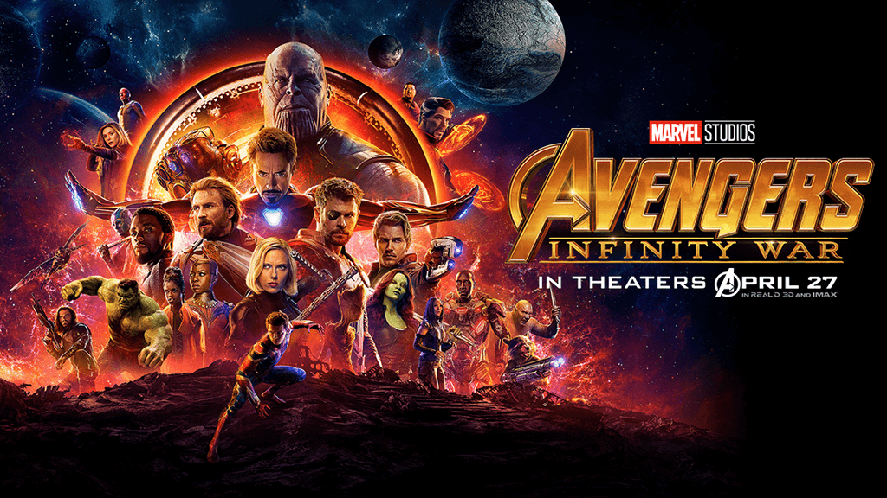

რკინის კაცი მთლიანი მარველის ინდუსტრიაში ყველაზე მდიდარი სუპერგმირია მან თავისი ფული თავის კოსტიუმს შეალია მისი ბალანსი შეადგენს 400 მილიონ ამერიკულ დოლარს
>რკინის კაცზე გამოვიდა ახალი ფილმი 2008 წელს სადაც დეტალურად არის რკინის კაცის ცხოვრება და ისტორია გადმოცემული ასევე ფილმის მიხედვით ტონის სტარკი ყველაზე გავლენიანი პიროვნებაა ის მილიონერია როგორც კომიქსებში არის ნაჩვენები მაგრამ ერთი რამ რაც შეუცვლელია არის რკინის კაცის განვითარების ისტორია
2010-2022 წლებში გამოჩნდნენ პირველი შურის მაძიებლები სადაც პირველად გამოჩნდნენ ყველასთვის საყვარელი სუპერგმირები მაგალითად: ჰალკი , ფიური , კაპიტანი ამერიკა , შავი ქვრივი , თორი და ყველასთვის საყვარელი რკინის კაცი ამ ფილმა დიდი პოპულარობა მოიპოვა 2010 წელს და იმ დროის ყველაზე დიდი პოპულარობა ამ ფილმა დაიმსახურა 1.5 მილიონი მაყურებელი მხოლოდ პირველ სერიაზე ეს მხოლოდ დასაწყისი იყო ყოველ წლიურად ახალ ახალი ნაწილები გამოდიოდა ამ არაჩვეულებრივი ფილმის სერიების რასაც მინიმუმ 2 მილიონი ნახვა ჰქონდა ხოლმე ხალხი ყოველთვის ახალ ნაწილს ელოდებოდა
\
2022 წელს გამოდის შურის მაძიებლების ბოლო ნაწილი სახელ წოდებით შურის მაძიებლები უსასრულობის ომი სადაც იღუპება პირველი შურის მაძიებელი რკინის კაცი რომელმაც საკუთარი ქვეყნისთვის თავი გაწირა მაგრამ მაინც ვერ დამარცხდა მთავარი ბოროტმოქმედი თანოსი რადან მან 5 უსასრულობის ქვა შეაქუჩა და მთლიანი სამტარო ხელთ ჩაიგდო
2023 წელს გამოდის გალაქტიკის მცველები სადაც ყველაფერს აეხადა ფარდა და გაიგეს თუ როგორ გადარჩა თანოსი და შემდეგ მას სამუდამოდ გაანადგურებენ და აღმოაჩინებენ დიდ საიდუმლოებებს რაც თანოსმა მათთან ბრძოლისას გამოიყენა და ის მისივე ძალები დაამარცხეს